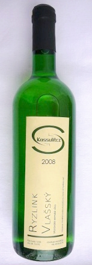
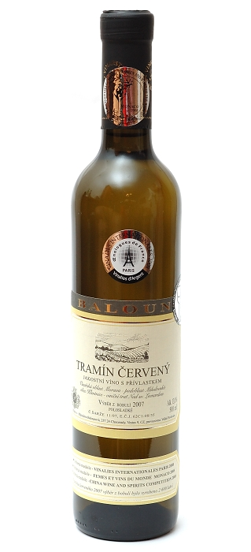
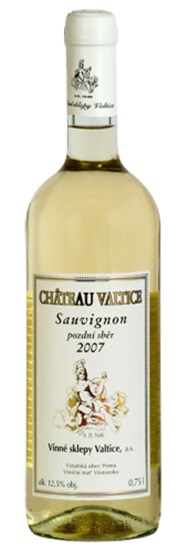
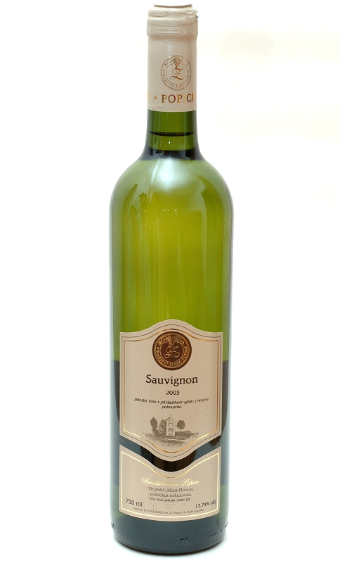
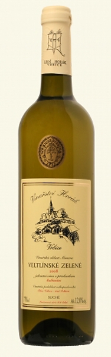

Stranka: | 1 | 2 |
| Ryzlink Vlašský zemský ročník 2008 | |||
| Výrobce | Košulič |  | |
| Dostupnost | Obvykle skladem | ||
| Oblast | Velkopavlovická | ||
| Objem | 0,75 l | 129,- Kč/Ks | |
| Obsah cukru | polosladké | Koupit | |
| Obsah alko. | 11,5 % | ||
| Charakteristika: | |||
| Víno jiskrně až mladistvě žluté, ušlechtilé barvy. Upoutá lahodnou ovocnou vůní banánů, zelených jablek, a jejich jadérek po prodýchání pak vínem prostupují lehké vanilkové tóny. | |||
| Tramín červený výběr z bobulí ročník 2007 | |||
| Výrobce | Baloun |  | |
| Dostupnost | Skladem | ||
| Oblast | Velkopavlovická | ||
| Objem | 0,5 l | 315,- Kč/Ks | |
| Obsah cukru | polosladké | Koupit | |
| Obsah alko. | 12 % | ||
| Charakteristika: | |||
| Víno s výraznou zlatožlutou barvou. Aroma je podbarveno sladce medovými tóny hrozinek. V chuti jemně kořenité s větším zbytkem cukru, který podporuje typické aroma čajových růží a také chuť. | |||
| Sauvignon pozdní sběr ročník 2007 | |||
| Výrobce | Vinné sklepy Valtice |  | |
| Dostupnost | Obvykle skladem | ||
| Oblast | Mikulovská | ||
| Objem | 0,75 l | 209,- Kč/Ks | |
| Obsah cukru | suché | Koupit | |
| Obsah alko. | 12,5 % | ||
| Charakteristika: | |||
| Vůně je kořenitá s příjemnou ovocnou vůní s nádechem angreštu. Chuť je příjemná, vyvážená s pikantní kyselinkou. Vhodné k bílým masům, těstovinám a k sýrům s bílou plísní na povrchu. | |||
| Sauvignon výběr z hroznů ročník 2005 | |||
| Výrobce | Žídek |  | |
| Dostupnost | Skladem | ||
| Oblast | Mikulovská | ||
| Objem | 0,75 l | 190,- Kč/Ks | |
| Obsah cukru | polosuché | Koupit | |
| Obsah alko. | 13,74 % | ||
| Charakteristika: | |||
| Víno pěkné zlatožluté barvy. Ve vůni je cítit angrešt a broskvové pyré. Chuť bohatá s výrazným aroma broskví. V dochuti je cítit minerální tón. Je to víno s dlouhým závěrem a velice silným dojmem. | |||
| Veltlínské zelené kabinetní ročník 2008 | |||
| Výrobce | Horák |  | |
| Dostupnost | Obvykle skladem | ||
| Oblast | Velkopavlovická | ||
| Objem | 0,75 l | 182,- Kč/Ks | |
| Obsah cukru | suché | Koupit | |
| Obsah alko. | 12 % | ||
| Charakteristika: | |||
| Můžeme obdivovat jiskrnou žlutozelenou barvu. Vůně je velmi bohatá a výrazná s ovocnými tóny zeleného jablka. Chuť je oblá, kořenitá s tělnatým tělem a šťavnatou kyselinkou. | |||
Stranka: | 1 | 2 |